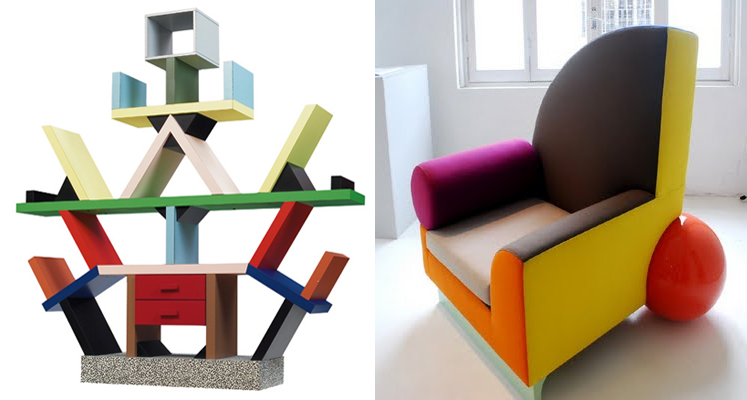

O movimento Memphis, típico do final da década de 1970 e mais difundido nos anos 1980, tem como característica objetos provocativos e com cores fortes, e ilustram o período de “libertação do design no que se refere à estética” no Brasil e no mundo, propondo a discussão sobre a anti-funcionalidade.
Originário de Milão, o grupo Memphis, fundado por Ettore Sottsass, reuniu designers, artistas e arquitetos como Barbara Radice, Michele De Lucchi, Marco Zanini, Martine Bedin, Natalie Pasquier e George Sowden, entre outros.

Acreditando que o consumo é também a busca por identidade, seus designers criaram objetos provocativos, anti-funcionais, excêntricos, ornamentais (muitos o comparam ao Arts & Crafts), com uso de cores fortes, plásticos laminados e estampados. Memphis queria provocar “caos semântico”. Com humor, energia e vitalidade, criou um novo vocabulário para o design.

A grande herança de Memphis pode ser creditada aos movimentos de vanguarda italianos Radical Design e Anti-Design. Eles contestavam o funcionalismo e o racionalismo do estilo moderno internacional, valorizando a expressão criativa individual e a diferenciação cultural. Ambos criaram os fundamentos teóricos para o futuro movimento pós-moderno. A primeira exposição do grupo ocorreu na Feira do Móvel de Milão, em setembro de 1981, obtendo enorme sucesso, apesar das críticas. O evento se repetiria todos os anos até 1988, quando o grupo se desfez consciente de que não era mais possível surpreender. Sottsass já havia abandonado o grupo em 1985, concentrando suas atividades no estúdio Sottsass Associati, onde voltou a dedicar-se à arquitetura, trabalhando em projetos para cadeias de lojas, prédios públicos e residências.

Mesmo com sua dissolução em 1988, o grupo Memphis influenciou muito o design pelo mundo afora. Apesar de todas as contradições, permitiu ao design se liberar de sua vocação unicamente utilitária. Alguns dos conceitos propostos ainda permanecem, como o uso de cores fortes e contrastantes em móveis e utensílios; e também o uso do plástico, que pelas mãos dos italianos, ganhou formas originais e ar refinado, além de contribuir para baratear o design e abrir caminho para a aceitação de objetos.
Matéria originalmente publicada por Treere Design in Movimento.